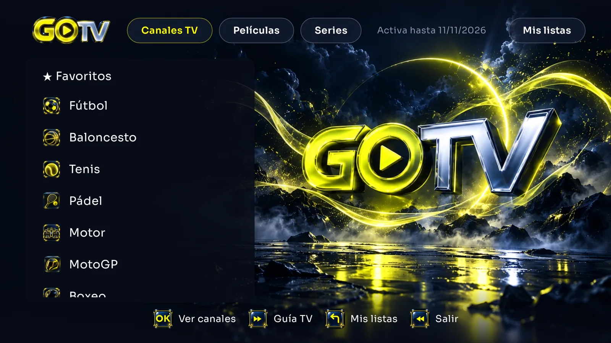
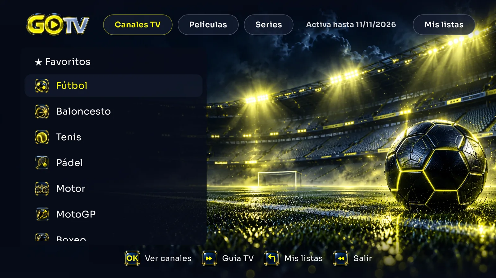
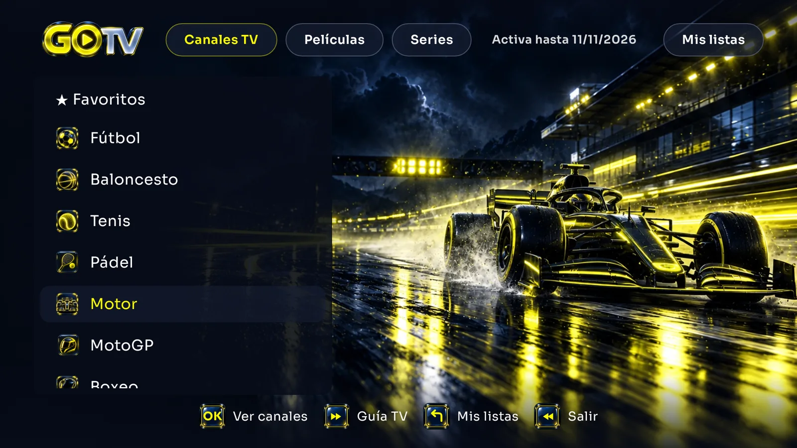
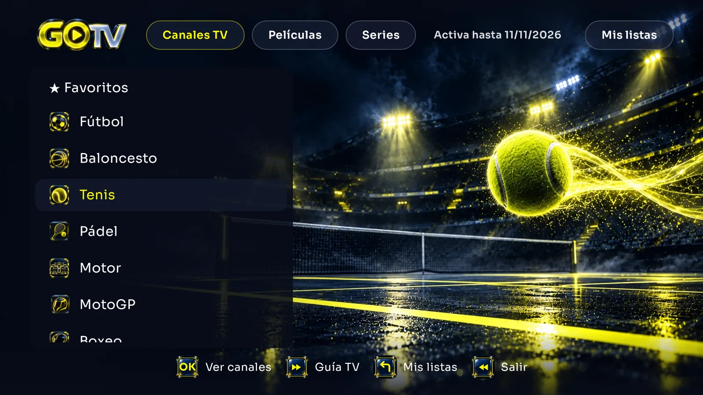
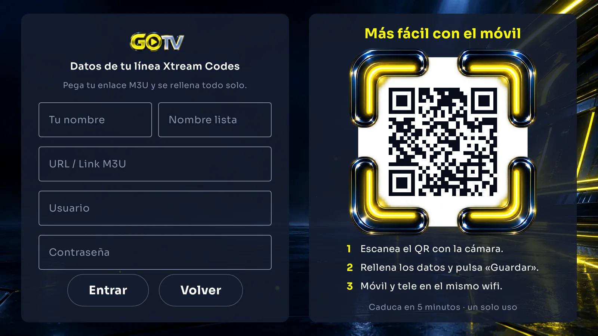
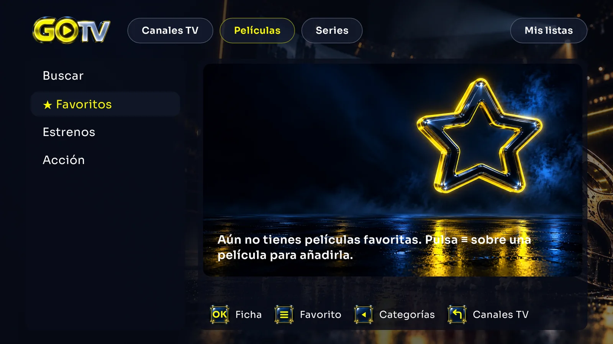
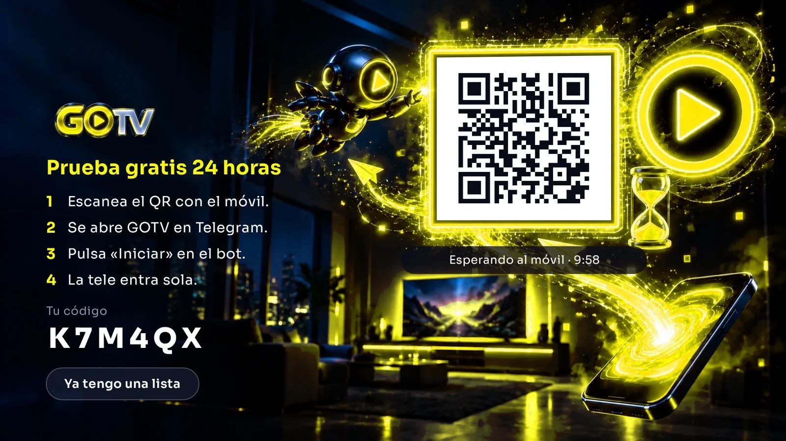

<title>GOTV</title>
<meta name="claude:viewport-fit-sides" content="cover">
<meta name="description" content="GOTV, el reproductor para Fire TV y Android TV. Tu lista en la mejor calidad que aguanta tu tele.">
<link rel="icon" href="img/icono.png">
<link rel="preconnect" href="https://fonts.googleapis.com">
<link rel="preconnect" href="https://fonts.gstatic.com" crossorigin>
<link rel="stylesheet" href="https://fonts.googleapis.com/css2?family=Sora:wght@300;400;600;700;800&family=JetBrains+Mono:wght@500;700&display=swap">
<style>
/* Layout: una sola columna ancha tipo "pantalla de tele"; capturas reales enmarcadas como un televisor, texto a la izquierda. Tema único oscuro (la marca es neón sobre azul noche). */
:root{
  --noche:#070B18;      /* fondo de la app */
  --panel:#141C30;      /* paneles de la app */
  --panel-2:#1C2640;
  --neon:#EAFF00;       /* amarillo GOTV */
  --neon-suave:rgba(234,255,0,.14);
  --texto:#EEF1F8;
  --gris:#9AA5C0;
  --linea:rgba(154,165,192,.18);
  --f-display:"Sora",system-ui,-apple-system,"Segoe UI",sans-serif;
  --f-texto:"Sora",system-ui,-apple-system,"Segoe UI",sans-serif;
  --f-codigo:"JetBrains Mono",ui-monospace,"SF Mono",Menlo,monospace;
  --ancho:1180px;
  color-scheme:dark;
}
*{box-sizing:border-box}
html{scroll-behavior:smooth}
body{background:var(--noche);color:var(--texto);font-family:var(--f-texto);font-size:16px;line-height:1.6;-webkit-font-smoothing:antialiased;overflow-x:hidden}
body::before{content:"";position:fixed;inset:0 0 auto;height:env(safe-area-inset-top,0px);z-index:10;background:var(--noche)}
a{color:inherit}
img,video{max-width:100%;display:block}
h1,h2,h3{font-family:var(--f-display);text-wrap:balance;margin:0;line-height:1.1}
p{margin:0}
.envoltura{max-width:var(--ancho);margin:0 auto;padding-left:max(16px,env(safe-area-inset-left,0px));padding-right:max(16px,env(safe-area-inset-right,0px))}
:focus-visible{outline:2px solid var(--neon);outline-offset:3px;border-radius:6px}

/* Botones: copian los "pill" de la app (borde neón al enfocar) */
.boton{display:inline-flex;align-items:center;gap:.6em;padding:.85em 1.5em;border-radius:999px;font-weight:700;font-size:1rem;text-decoration:none;border:1.5px solid var(--linea);background:var(--panel);color:var(--texto);transition:border-color .2s,box-shadow .2s,transform .2s;cursor:pointer;font-family:inherit}
.boton:hover{border-color:var(--neon);box-shadow:0 0 0 4px var(--neon-suave)}
.boton.principal{background:var(--neon);color:var(--noche);border-color:var(--neon)}
.boton.principal:hover{box-shadow:0 0 28px rgba(234,255,0,.45);transform:translateY(-1px)}

/* Cabecera */
header{position:sticky;top:env(safe-area-inset-top,0px);z-index:20;background:rgba(7,11,24,.82);backdrop-filter:blur(12px);-webkit-backdrop-filter:blur(12px);border-bottom:1px solid var(--linea)}
.cab{display:flex;align-items:center;gap:24px;padding-block:12px}
.cab img{height:34px;width:auto}
.cab nav{display:flex;gap:22px;margin-left:auto;font-size:.92rem;color:var(--gris)}
.cab nav a{text-decoration:none}
.cab nav a:hover{color:var(--texto)}
.cab .boton{padding:.55em 1.1em;font-size:.9rem}
@media (max-width:760px){.cab nav{display:none}.cab .boton{margin-left:auto}}

/* Portada */
.portada{padding-block:64px 40px;display:grid;grid-template-columns:1fr 1.15fr;gap:48px;align-items:center}
.portada>*{min-width:0}
.etiqueta{font-size:.78rem;letter-spacing:.14em;text-transform:uppercase;color:var(--neon);font-weight:600}
.portada h1{font-size:clamp(2.2rem,5vw,3.6rem);font-weight:800;letter-spacing:-.02em;margin-top:14px}
.portada h1 em{font-style:normal;color:var(--neon)}
.portada .entradilla{color:var(--gris);font-size:1.12rem;margin-top:18px;max-width:34em}
.acciones{display:flex;flex-wrap:wrap;gap:12px;margin-top:28px}
.nota{font-size:.85rem;color:var(--gris);margin-top:14px}
@media (max-width:900px){.portada{grid-template-columns:1fr;padding-block:24px 24px;gap:28px}.portada>.tele{order:-1}}
.sonido{position:absolute;right:22px;bottom:22px;z-index:2;display:inline-flex;align-items:center;gap:8px;padding:10px 16px;border-radius:999px;border:1.5px solid var(--neon);background:rgba(7,11,24,.85);color:var(--neon);font:700 .9rem var(--f-texto,inherit);cursor:pointer;box-shadow:0 0 18px rgba(234,255,0,.35)}
.sonido[hidden]{display:none}
@media (max-width:600px){.sonido{right:16px;bottom:16px;padding:6px 12px;font-size:.78rem}}

/* Televisor: marco para vídeo y capturas */
.tele{position:relative;border-radius:14px;padding:10px;background:linear-gradient(160deg,#1f2945,#0c1222);box-shadow:0 30px 80px -20px rgba(0,0,0,.8),0 0 0 1px var(--linea),0 0 60px -10px rgba(234,255,0,.18)}
.tele>img,.tele>video{border-radius:6px;width:100%;height:auto;aspect-ratio:16/9;object-fit:cover;background:var(--noche)}
.tele::after{content:"";position:absolute;left:50%;bottom:-18px;width:34%;height:8px;transform:translateX(-50%);border-radius:0 0 10px 10px;background:#0c1222;box-shadow:0 0 0 1px var(--linea)}

/* Banda de datos rápidos */
.datos{border-block:1px solid var(--linea);background:var(--panel)}
.datos ul{list-style:none;margin:0 auto;display:grid;grid-template-columns:repeat(4,1fr);gap:16px;padding-block:22px}
.datos li{display:flex;flex-direction:column;gap:2px;min-width:0}
.datos b{font-size:1.05rem}
.datos span{color:var(--gris);font-size:.86rem}
@media (max-width:760px){.datos ul{grid-template-columns:1fr 1fr}}

section{padding-block:88px}
.titulo-seccion{max-width:44rem}
.titulo-seccion h2{font-size:clamp(1.8rem,3.6vw,2.6rem);font-weight:700;margin-top:10px;letter-spacing:-.01em}
.titulo-seccion p{color:var(--gris);margin-top:14px;font-size:1.05rem}

/* Funciones: fila alterna texto / tele */
.funcion{display:grid;grid-template-columns:1fr 1.2fr;gap:56px;align-items:center;margin-top:72px}
.funcion>*{min-width:0}
.funcion.al-reves .texto{order:2}
.funcion h3{font-size:1.6rem;font-weight:700}
.funcion p{color:var(--gris);margin-top:12px;max-width:32em}
.funcion ul{margin:18px 0 0;padding:0;list-style:none;display:grid;gap:10px}
.funcion li{display:flex;gap:12px;align-items:baseline}
.tecla{flex:none;display:inline-grid;place-items:center;width:3.6em;height:2.1em;padding:0;border-radius:8px;border:1.5px solid var(--neon);color:var(--neon);font-family:var(--f-codigo);font-size:.8rem;font-weight:700;box-shadow:0 0 12px rgba(234,255,0,.25) inset}
@media (max-width:900px){.funcion{grid-template-columns:1fr;gap:28px;margin-top:56px}.funcion.al-reves .texto{order:0}}

/* Carrusel de carpetas */
.carrusel{position:relative}
.carrusel img{position:absolute;inset:10px;width:calc(100% - 20px);height:calc(100% - 20px);opacity:0;transition:opacity 1.2s ease}
.carrusel img.activa{opacity:1}
.carrusel .base{position:relative;inset:auto;width:100%;height:auto;opacity:1;aspect-ratio:16/9;border-radius:6px}
.carrusel img{border-radius:6px;object-fit:cover}

/* Rejilla de ventajas pequeñas */
.ventajas{display:grid;grid-template-columns:repeat(3,1fr);gap:1px;margin-top:64px;background:var(--linea);border:1px solid var(--linea);border-radius:16px;overflow:hidden}
.ventajas div{background:var(--noche);padding:28px}
.ventajas h3{font-size:1.08rem;font-weight:700}
.ventajas p{color:var(--gris);font-size:.94rem;margin-top:8px}
@media (max-width:900px){.ventajas{grid-template-columns:1fr}}

/* Instalar */
.instalar{background:radial-gradient(1200px 500px at 80% 0%,rgba(234,255,0,.07),transparent 60%),var(--panel)}
.pasos{display:grid;grid-template-columns:repeat(3,1fr);gap:20px;margin-top:48px;counter-reset:paso}
.paso{background:var(--noche);border:1px solid var(--linea);border-radius:16px;padding:28px;display:flex;flex-direction:column;gap:10px;min-width:0}
.paso .num{font-family:var(--f-codigo);color:var(--neon);font-weight:700;font-size:.85rem;letter-spacing:.1em}
.paso h3{font-size:1.2rem}
.paso p{color:var(--gris);font-size:.95rem}
.codigo{margin-top:6px;display:flex;align-items:center;gap:6px;flex-wrap:wrap}
.codigo .cifras{display:flex;gap:5px}
.codigo .cifras span{display:grid;place-items:center;width:2em;height:2.5em;border-radius:8px;background:var(--panel-2);border:1.5px solid rgba(234,255,0,.55);font-family:var(--f-codigo);font-weight:700;font-size:1.1rem;color:var(--neon)}
.copiar{font-size:.82rem;padding:.5em 1em;margin-left:4px}
@media (max-width:900px){.pasos{grid-template-columns:1fr}}

/* Planes */
.planes{display:grid;grid-template-columns:minmax(0,420px);gap:16px;margin-top:48px}
.plan{border:1px solid var(--linea);border-radius:16px;padding:26px;display:flex;flex-direction:column;gap:6px;background:var(--panel);min-width:0}
.plan .dur{color:var(--gris);font-size:.9rem}
.plan .precio{font-size:2rem;font-weight:800;font-variant-numeric:tabular-nums}
.plan .detalle{color:var(--gris);font-size:.88rem;margin-top:4px}
.plan.destacado{border-color:var(--neon);box-shadow:0 0 0 4px var(--neon-suave)}
.plan.destacado .dur{color:var(--neon)}
.clientes{margin-top:24px;display:flex;flex-wrap:wrap;gap:16px 24px;align-items:center;justify-content:space-between;border:1px dashed rgba(234,255,0,.5);border-radius:16px;padding:22px 26px}
.clientes p{max-width:40em}
.clientes b{color:var(--neon)}
@media (max-width:900px){.planes{grid-template-columns:1fr}}
@media (max-width:480px){.planes{grid-template-columns:1fr}}

/* Preguntas */
.preguntas{margin-top:40px;display:grid;gap:10px;max-width:52rem}
details{border:1px solid var(--linea);border-radius:12px;background:var(--panel);padding:0 22px}
summary{cursor:pointer;list-style:none;padding:18px 0;font-weight:600;display:flex;justify-content:space-between;gap:16px}
summary::-webkit-details-marker{display:none}
summary::after{content:"+";color:var(--neon);font-family:var(--f-codigo);font-size:1.2rem;line-height:1}
details[open] summary::after{content:"−"}
details p{color:var(--gris);padding-bottom:18px;max-width:46em}

footer{border-top:1px solid var(--linea);padding-block:40px;color:var(--gris);font-size:.88rem}
.pie{display:flex;flex-wrap:wrap;gap:20px 40px;justify-content:space-between;align-items:flex-start}
.pie img{height:28px;width:auto;margin-bottom:12px}
.pie p{max-width:36em}
.legal{margin-top:28px;padding-top:20px;border-top:1px solid var(--linea);font-size:.8rem;display:grid;gap:8px}
.legal p{max-width:62em}
.legal b{color:var(--texto)}

@media (prefers-reduced-motion:reduce){*{transition:none!important;scroll-behavior:auto!important}}
</style>

<header>
  <div class="envoltura cab">
    <a href="#inicio" aria-label="GOTV, ir al inicio"></a>
    <nav aria-label="Secciones">
      <a href="#funciones">Qué hace</a>
      <a href="#instalar">Instalar</a>
      <a href="#planes">Precio</a>
      <a href="#preguntas">Preguntas</a>
    </nav>
    <a class="boton principal" href="#instalar">Descárgala gratis</a>
  </div>
</header>

<main id="inicio">
  <div class="envoltura portada">
    <div>
      <span class="etiqueta">Reproductor para Fire TV y Android TV</span>
      <h1>Tu lista, en la <em>máxima calidad</em> que aguanta tu tele.</h1>
      <p class="entradilla">GOTV elige por ti la mejor versión de cada canal, te deja pausar y volver atrás en directo y se actualiza con un clic. Tú solo eliges qué ver.</p>
      <div class="acciones">
        <a class="boton principal" href="#instalar">Descárgala gratis</a>
        <a class="boton" href="#planes">Ya soy cliente</a>
      </div>
      <p class="nota">Sin registros ni tarjeta. La prueba se activa desde la propia app, con el móvil.</p>
    </div>
    <div class="tele">
      <video id="intro" src="img/promo.mp4" poster="img/promo-poster.webp" autoplay muted loop playsinline preload="auto" aria-label="Vídeo de presentación de GOTV"></video>
      <button class="sonido" id="sonido" type="button">🔊 Activar sonido</button>
    </div>
  </div>

  <div class="datos">
    <ul class="envoltura">
      <li><b>Fire TV y Android TV</b><span>También móvil y tablet Android</span></li>
      <li><b>Xtream Codes y M3U</b><span>Funciona con tu propia lista</span></li>
      <li><b>Activa en 1 minuto</b><span>Escaneas un QR y listo</span></li>
      <li><b>Canales en 1-2 s</b><span>Medido en Fire TV, en Full HD</span></li>
    </ul>
  </div>

  <section id="funciones">
    <div class="envoltura">
      <div class="titulo-seccion">
        <span class="etiqueta">Qué hace</span>
        <h2>Hecho para el mando, no para técnicos.</h2>
        <p>Nada de ajustes de calidad, formatos ni memoria. GOTV hace ese trabajo por dentro y tú ves la tele.</p>
      </div>

      <div class="funcion">
        <div class="texto">
          <h3>La mejor calidad, siempre en automático</h3>
          <p>Si tu lista trae el mismo canal en FHD, HD y otras versiones, GOTV lo enseña una sola vez. Arranca en la mejor que mueve tu aparato, baja solo si hace falta y vuelve a subir en cuanto puede.</p>
          <ul>
            <li><span class="tecla">FHD</span> Empieza siempre por la mejor versión.</li>
            <li><span class="tecla">HD</span> Si tu conexión flojea, cambia sola.</li>
            <li><span class="tecla">1×</span> Cada canal aparece una vez, sin duplicados.</li>
          </ul>
        </div>
        <div class="tele"></div>
      </div>

      <div class="funcion al-reves">
        <div class="texto">
          <h3>Todo ordenado, cada carpeta con su ambiente</h3>
          <p>Las carpetas de tu lista salen en un orden claro, cada país en su bloque y los deportes primero. Al moverte por ellas cambia el fondo para que encuentres lo tuyo de un vistazo.</p>
        </div>
        <div class="tele carrusel" id="carrusel">
          
          
          
        </div>
      </div>

      <div class="funcion">
        <div class="texto">
          <h3>Tu lista, desde el móvil</h3>
          <p>Nada de teclear usuarios y contraseñas con el mando. Escaneas el QR de la tele, rellenas los datos en el teléfono y GOTV carga tu lista en segundos.</p>
        </div>
        <div class="tele"></div>
      </div>

      <div class="funcion al-reves">
        <div class="texto">
          <h3>Películas y series con favoritos</h3>
          <p>El videoclub de tu lista con ficha, año y puntuación. Marca tus favoritas con un botón del mando y las tienes siempre a mano.</p>
        </div>
        <div class="tele"></div>
      </div>

      <div class="ventajas">
        <div><h3>Guía de programación</h3><p>Qué echan ahora y después en cada canal, sin salir de la lista.</p></div>
        <div><h3>Se actualiza con un clic</h3><p>Cuando hay versión nueva te avisa una vez y se instala sola. Nunca mientras ves un canal.</p></div>
        <div><h3>Contenido adulto con PIN</h3><p>Escondido por defecto. Solo aparece con tu código.</p></div>
        <div><h3>Seguir viendo</h3><p>Vuelve al último canal o al anterior con una tecla.</p></div>
        <div><h3>Ligera</h3><p>Pensada para funcionar fluida incluso en el Fire TV Stick más básico.</p></div>
        <div><h3>Pausa el directo</h3><p>Para el partido, sigue donde lo dejaste o vuelve al directo con una tecla.</p></div>
      </div>
    </div>
  </section>

  <section id="instalar" class="instalar">
    <div class="envoltura">
      <div class="titulo-seccion">
        <span class="etiqueta">Instalar y probar gratis</span>
        <h2>Tres pasos con el mando.</h2>
        <p>Funciona en cualquier Fire TV Stick, Fire TV Cube y tele con Android TV o Google TV.</p>
      </div>
      <div class="pasos">
        <div class="paso">
          <span class="num">PASO 1</span>
          <h3>Instala Downloader</h3>
          <p>En tu Fire TV, busca «Downloader» en la tienda de apps y descárgala. Es gratis.</p>
        </div>
        <div class="paso">
          <span class="num">PASO 2</span>
          <h3>Escribe este código</h3>
          <p>Abre Downloader, escribe el código y pulsa «Go». GOTV se descarga e instala.</p>
          <div class="codigo">
            <div class="cifras" aria-label="Código 6746441"><span>6</span><span>7</span><span>4</span><span>6</span><span>4</span><span>4</span><span>1</span></div>
            <button class="boton copiar" id="copiar" type="button">Copiar</button>
          </div>
        </div>
        <div class="paso">
          <span class="num">PASO 3</span>
          <h3>Escanea el QR</h3>
          <p>Abre GOTV, escanea el QR con el móvil y pulsa «Iniciar». La tele entra sola con tu prueba gratis.</p>
        </div>
      </div>
      <div class="funcion" style="margin-top:56px">
        <div class="texto">
          <h3>Activación sin teclear nada</h3>
          <p>La primera vez, GOTV te enseña un QR. Lo escaneas con el móvil, confirmas en Telegram y la tele se activa sola. Si ya tienes tu lista, la añades también desde el móvil.</p>
        </div>
        <div class="tele"></div>
      </div>
    </div>
  </section>

  <section id="planes">
    <div class="envoltura">
      <div class="titulo-seccion">
        <span class="etiqueta">Precio</span>
        <h2>GOTV es gratis.</h2>
        <p>Sin suscripciones, sin pagos dentro de la app y sin tarjeta. Descárgala, actívala y listo.</p>
      </div>
      <div class="planes">
        <div class="plan destacado"><span class="dur">App GOTV</span><span class="precio">Gratis</span><span class="detalle">Fire TV, Android TV, móviles y tablets Android</span></div>
      </div>
      <div class="clientes" id="clientes">
        <p><b>¿Necesitas ayuda?</b> Si tienes dudas al instalarla o activarla, escríbenos y te ayudamos.</p>
        <a class="boton" href="https://t.me/GOSOPORTE" target="_blank" rel="noopener">Hablar con soporte</a>
      </div>
    </div>
  </section>

  <section id="preguntas" style="padding-top:0">
    <div class="envoltura">
      <div class="titulo-seccion">
        <span class="etiqueta">Preguntas</span>
        <h2>Lo que más nos preguntan.</h2>
      </div>
      <div class="preguntas">
        <details><summary>¿GOTV trae canales?</summary><p>No. GOTV es un reproductor: no incluye ni vende canales, películas ni series. Ves la lista que ya tienes (Xtream Codes o M3U) con una app más rápida y cómoda.</p></details>
        <details><summary>¿En qué aparatos funciona?</summary><p>Fire TV Stick (todos los modelos), Fire TV Cube, teles con Android TV o Google TV y móviles o tablets Android. En iPhone, LG o Samsung no se puede instalar: para esas teles te recomendamos un Fire TV Stick.</p></details>
        <details><summary>¿Cuánto cuesta?</summary><p>Nada. GOTV es gratis: no tiene suscripción ni pagos dentro de la app, y no pedimos tarjeta.</p></details>
        <details><summary>¿Tengo que configurar la calidad?</summary><p>No. GOTV elige sola la mejor versión de cada canal para tu aparato y tu conexión, y cambia sin que tengas que tocar nada.</p></details>
        <details><summary>¿Qué pasa si cambio de wifi o me mudo?</summary><p>Nada. La licencia va unida a tu aparato, no a tu conexión.</p></details>
        <details><summary>¿Cómo se actualiza?</summary><p>GOTV te avisa cuando hay una versión nueva y se instala con un clic. Nunca te interrumpe mientras ves un canal.</p></details>
      </div>
    </div>
  </section>
</main>

<footer>
  <div class="envoltura pie">
    <div>
      
      <p>GOTV es un reproductor de vídeo. No incluye, vende ni distribuye canales ni contenido: cada usuario añade su propia lista.</p>
    </div>
    <div>
      <p>Soporte en Telegram: <a href="https://t.me/GOSOPORTE" target="_blank" rel="noopener">@GOSOPORTE</a></p>
    </div>
  </div>
  <div class="envoltura legal">
    <p><b>© 2026 GOTV.</b> Todos los derechos reservados.</p>
    <p>GOTV es únicamente un reproductor multimedia. No reproduce por sí mismo, no vende, no aloja ni distribuye contenido, canales ni listas de reproducción, y no está asociado a ningún proveedor de contenido. Cada usuario añade su propia lista y es el único responsable de que el contenido que reproduce sea legal y de tener los derechos para verlo. GOTV no apoya el uso de contenido protegido sin autorización.</p>
  </div>
</footer>

<script>
(function(){
  var reduce = window.matchMedia && matchMedia('(prefers-reduced-motion: reduce)').matches;
  var v = document.getElementById('intro');
  var b = document.getElementById('sonido');
  if (v) {
    if (reduce) { v.removeAttribute('autoplay'); try { v.pause(); } catch(e){} }
    else { var p = v.play(); if (p && p.catch) p.catch(function(){}); }
    if (b) b.addEventListener('click', function(){
      v.muted = false; v.loop = false; v.currentTime = 0; v.controls = true;
      var q = v.play(); if (q && q.catch) q.catch(function(){});
      b.hidden = true;
    });
  }

  var imgs = document.querySelectorAll('#carrusel img'), i = 0;
  if (!reduce && imgs.length > 1) {
    setInterval(function(){
      imgs[i].classList.remove('activa');
      i = (i + 1) % imgs.length;
      imgs[i].classList.add('activa');
    }, 3500);
  }

  var b = document.getElementById('copiar');
  b.addEventListener('click', function(){
    var hecho = function(){ b.textContent = 'Copiado'; setTimeout(function(){ b.textContent = 'Copiar'; }, 2000); };
    try {
      navigator.clipboard.writeText('6746441').then(hecho, function(){ b.textContent = '6746441'; });
    } catch(e) { b.textContent = '6746441'; }
  });
})();
</script>
